메이저 아르카나 22장
메이저 아르카나 22장 개요
메이저 아르카나는 타로 78장 중 0번 바보부터 21번 세계까지 이어지는 22장의 카드로, '큰 비밀(Major Arcana)'이라 불린다. 이 22장은 흔히 '바보의 여정'이라는 이야기 구조로 해석되어, 한 인간이 순수한 출발점에서 시작해 다양한 시련과 깨달음을 거쳐 완성에 이르는 인생의 큰 단계를 상징한다. 마이너 아르카나가 일상의 구체적 사건을 다룬다면, 메이저 아르카나는 삶을 관통하는 보편적이고 원형적인 주제를 다룬다고 본다.
🃏 메이저 아르카나 22장 전체 카드 도감 (0~21)
아래 카드를 하나씩 살펴보며 0번 바보의 순수한 시작부터 21번 세계의 완성까지 이어지는 상징과 의미를 확인해보세요.


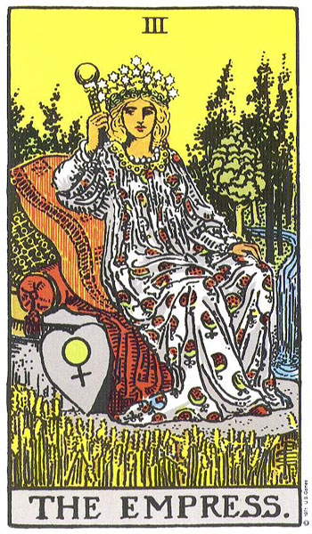

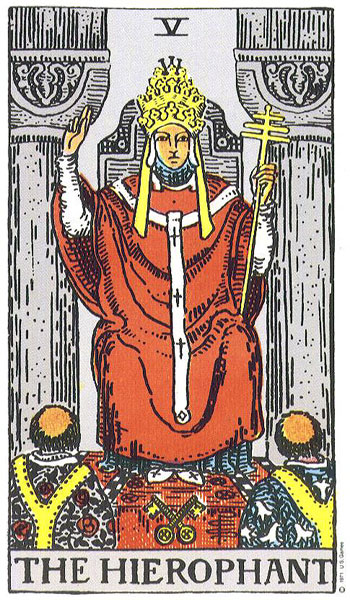
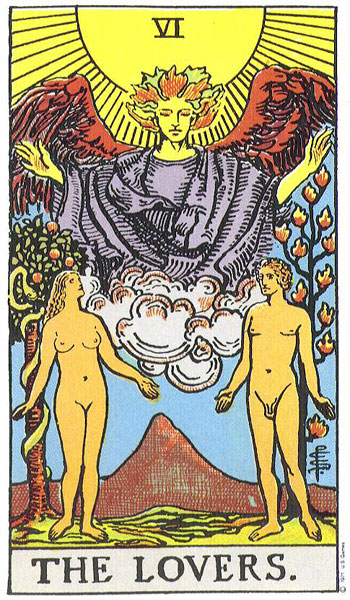

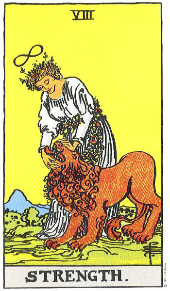
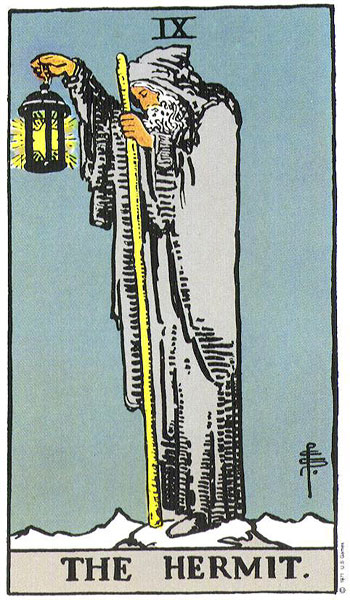
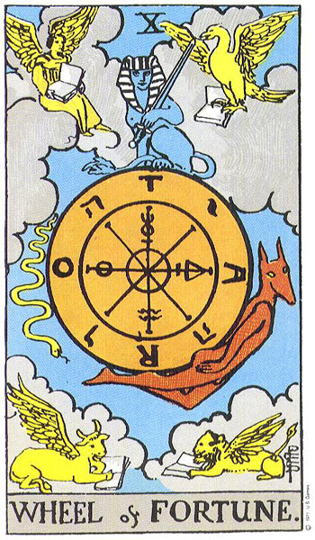
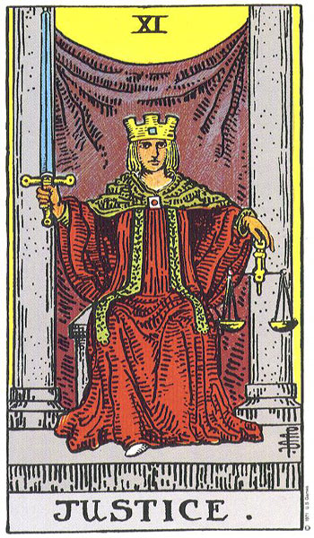
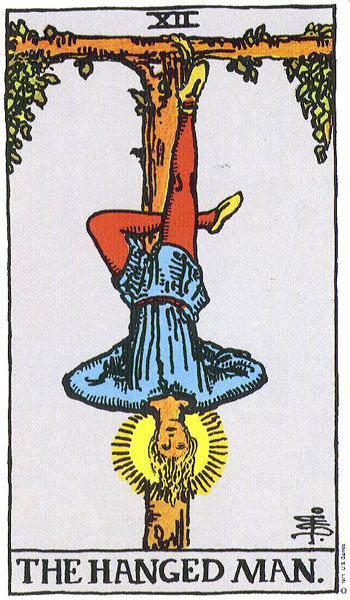
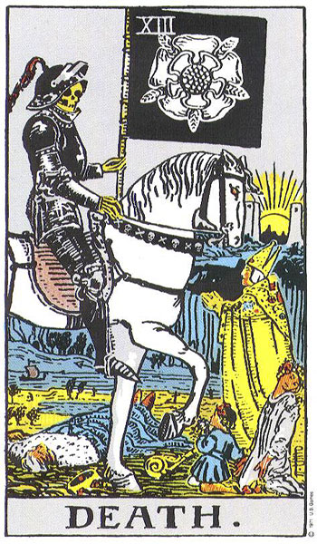

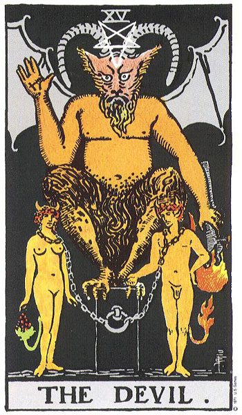
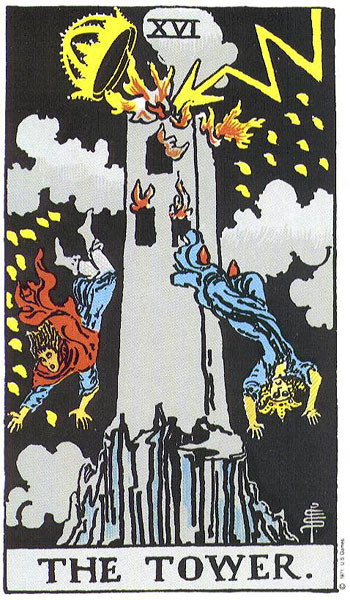
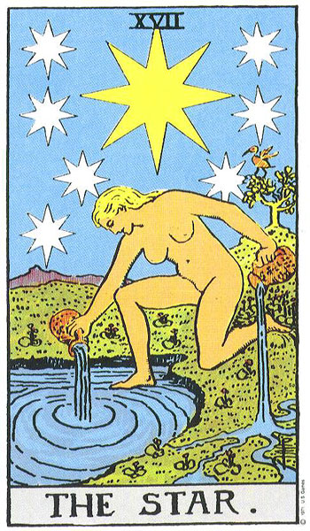
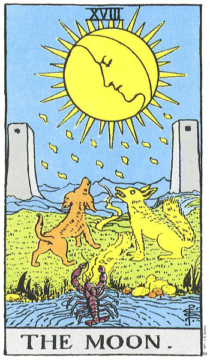
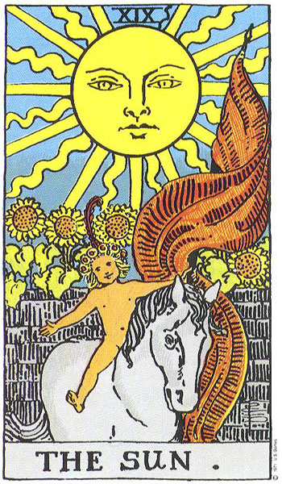
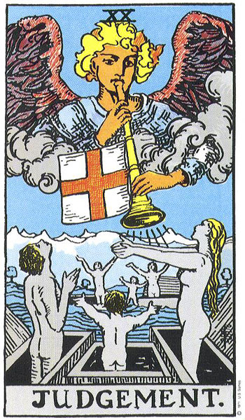
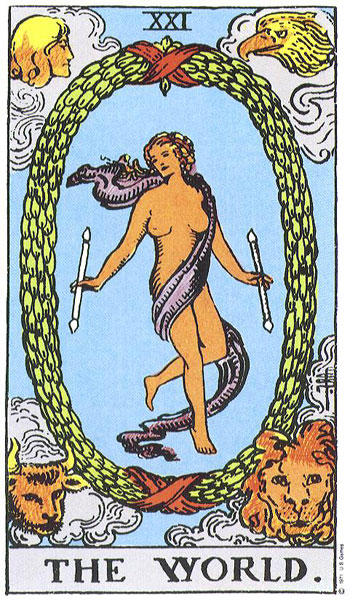
핵심 한눈에
0 바보(시작·순수)에서 21 세계(완성)까지 22장이 인생의 큰 흐름을 상징한다. 13 죽음, 15 악마, 16 탑처럼 무섭게 들리는 카드도 문자 그대로의 죽음이나 재앙이 아니라 '변화·집착·급변'이라는 상징적 의미로 읽는다는 점이 가장 중요하다.
📚 난이도별 학습
본인의 수준에 맞춰 탭을 선택하세요. 우측 상단 언어 토글로 영어/일본어/중국어로도 학습할 수 있습니다.
🃏 한 줄로 이해하기
메이저 아르카나 22장은 0번 '바보'가 길을 떠나 21번 '세계'에서 여행을 마치는, 한 편의 인생 모험 이야기가 담긴 카드 묶음이야!
🤔 왜 중요할까?
타로를 배울 때 제일 먼저 친해지면 좋은 카드가 바로 메이저 아르카나야. 78장 중에 22장뿐이지만, 이 카드가 나오면 "아주 크고 중요한 이야기"라는 뜻으로 보거든. 게다가 22장을 '바보의 여정'이라는 하나의 이야기로 묶어서 외우면, 카드마다 따로 암기 안 해도 술술 이어져서 훨씬 쉬워! 특히 죽음·악마·탑처럼 이름이 무서운 카드도, 진짜 뜻을 알면 하나도 안 무섭단다.😉 메이저 아르카나는 타로 전체의 뼈대이자 출발점이야.
🌱 꼭 알아둘 말
- 메이저 아르카나: '큰 비밀'이라는 뜻. 0번부터 21번까지 22장이야.
- 바보의 여정: 0번 바보가 여러 카드를 만나며 자라는 이야기로 22장을 엮어 보는 방법.
- 아르카나: 라틴어로 '비밀·신비'라는 뜻. 카드 묶음을 부르는 이름이야.
- 상징(symbol): 그림이 글자 그대로가 아니라 '빗대어' 뜻을 전하는 방식.
- 원형(archetype): 마법사·여사제처럼 누구나 떠올릴 수 있는 대표 인물 이미지.
📖 쉽게 풀어보기
메이저 아르카나를 한 권의 그림책이라고 상상해 봐! 첫 장에는 아무것도 모른 채 신나게 길을 나서는 0번 바보가 있어. 넘기면 뭐든 해내는 1번 마법사, 조용히 마음의 소리를 듣는 2번 여사제, 따뜻하게 품어주는 3번 여황제가 차례로 나와. 중간쯤엔 13번 죽음처럼 '옛날의 나를 끝내고 새로 태어나는' 장면이, 마지막엔 모든 걸 이룬 21번 세계가 있지. 카드 한 장은 인생의 한 장면일 뿐이라, 무서워 보이는 그림도 '끝과 새 시작'을 그린 페이지로 읽으면 돼!
⭐ 한 장 요약
- 메이저 아르카나는 0번 바보부터 21번 세계까지 22장이야.
- 이 22장은 '바보의 여정'으로 인생의 큰 단계를 상징해.
- 대표 카드: 0 바보(시작), 1 마법사(의지), 2 여사제(직관), 3 여황제(풍요).
- 죽음·악마·탑은 무섭게 들려도 사실은 변화·집착·급변의 상징이야.
- 메이저 카드가 나오면 그만큼 크고 중요한 이야기라고 봐!
이론 깊이 들어가기
메이저 아르카나의 순서를 단순한 번호 나열이 아니라 의미의 흐름으로 읽으면 카드 해석의 깊이가 달라진다. 0번 바보는 아무 조건도 없이 길을 나서는 순수와 가능성의 상태를 나타낸다. 이어 1번 마법사는 그 가능성을 현실로 끌어오는 의지와 집중을, 2번 여사제는 말로 드러나지 않는 직관과 내면의 지혜를 상징한다. 3번 여황제는 풍요와 돌봄, 생명을 키워내는 힘을 의미하는 것으로 본다. 여정의 중반부에는 8번 힘처럼 부드러움으로 본능을 다스리는 내적 용기, 12번 매달린 사람처럼 멈추어 관점을 뒤집는 인내와 전환의 카드가 놓인다. 13번 죽음은 타로에서 가장 오해받는 카드로, 문자 그대로의 죽음이 아니라 한 단계의 끝과 새로운 단계의 시작, 즉 변화를 의미한다고 해석한다. 후반부의 15번 악마는 집착과 속박을, 16번 탑은 갑작스러운 붕괴와 급변을 그리지만 이 또한 낡은 구조가 무너지고 진실이 드러나는 과정으로 읽는 경우가 많다. 17번 별(희망), 18번 달(불안·혼란), 19번 태양(성취·기쁨)을 지나 21번 세계에서 모든 경험이 통합되며 여정이 완성된다고 본다.
핵심 메커니즘
📐 바보의 여정이라는 해석 틀
0번 바보를 주인공으로 삼아 1번부터 21번까지를 그가 만나는 인물과 사건으로 읽는 방식이다. 이 틀에서는 카드가 따로 떨어진 의미가 아니라 '출발 → 시련과 배움 → 전환 → 완성'으로 이어지는 성장 서사의 한 장면이 된다. 이렇게 보면 죽음·탑처럼 충격적인 카드도 여정 전체에서 꼭 필요한 변화의 마디로 자리매김된다.
대표 사례
📐 사례 1 — 13번 죽음
상담 자리에서 13번 죽음 카드가 나오면 많은 사람이 놀라지만, 타로 해석에서는 이를 실제 죽음으로 읽지 않는 것이 원칙이다. 대신 오래된 관계나 습관, 일이 끝나고 그 자리에 새로운 국면이 열린다는 '끝과 시작'의 변화로 본다. 두려움보다 정리와 전환의 신호로 읽는 것이 일반적인 접근이다.
📐 사례 2 — 16번 탑
16번 탑은 번개에 맞아 무너지는 탑을 그려 급변과 충격을 상징한다. 하지만 이 카드 역시 단순한 재앙이 아니라, 거짓되거나 불안정하게 쌓아 올린 토대가 무너지며 비로소 진실이 드러나는 계기로 해석하는 경우가 많다. 변화가 갑작스러울 뿐, 그 뒤에는 더 단단한 재건이 따른다고 보는 관점이다.
현대적 전개
오늘날 메이저 아르카나는 점술의 도구를 넘어 자기 성찰과 심리 탐구의 매개로도 폭넓게 쓰인다. 특히 칼 융의 원형 이론과 연결해, 각 카드를 누구나 마음속에 지닌 보편적 이미지로 읽으려는 시도가 활발하다. 다만 이런 해석은 과학적으로 검증된 예언이 아니라, 자기 생각을 비추어 보는 거울이자 참고 자료로 받아들이는 것이 바람직하다.
전문가 레벨 이해
메이저 아르카나의 구조를 깊이 다루려면 카드 순서가 고정불변이 아니라 역사적으로 다양하게 변주되어 왔다는 점을 알아야 한다. 8번 힘과 11번 정의의 번호는 덱 전통에 따라 서로 자리를 바꾼 경우가 있으며, 이는 카드 배열이 하나의 절대적 정답이 아님을 보여준다. 또한 22장을 단순한 일렬 서사로만 보지 않고, 7장씩 세 묶음으로 나누어 의식·잠재의식·초월의 단계로 읽는 구조적 해석도 전해진다. '바보의 여정'이라는 틀 자체도 비교적 근대에 정교화된 해석 모델로, 카드가 처음 만들어진 의도와는 구분해서 이해하는 신중함이 필요하다. 죽음·악마·탑처럼 강렬한 카드일수록 상징의 폭이 넓어, 해석자가 자신의 선입견을 카드에 투사하기 쉽다는 점도 전문가가 경계하는 부분이다. 결국 메이저 아르카나의 깊이는 정해진 의미를 외우는 데 있지 않고, 맥락과 다른 카드와의 관계 속에서 의미를 조율하는 능력에 달려 있다고 본다.
최신 연구·쟁점
심리학과 문화 연구 분야에서 타로는 미래를 맞히는 도구가 아니라 자기 서사를 구성하고 성찰을 돕는 매개로 다루어지는 경향이 있다. 카드가 주는 모호하고 보편적인 진술이 누구에게나 들어맞는 것처럼 느껴지는 현상은 '바넘 효과'로 설명되며, 이는 타로의 적중감이 통계적 검증과는 다른 차원임을 시사한다. 따라서 메이저 아르카나의 가치를 예언의 정확성에서 찾기보다, 대화와 성찰을 여는 상징적 도구로 보는 입장이 학술적으로 더 받아들여진다. 단정적 예측이나 의학·법률 같은 중대한 결정을 카드에 맡기는 태도는 분명한 한계가 있으며 권장되지 않는다.
관련 분야
- 분석심리학: 융의 원형·집단 무의식 개념이 카드의 상징 해석에 활용된다
- 미술사·도상학: 르네상스 시기 카드 그림의 상징과 도상을 추적하는 분야
- 인지심리학: 바넘 효과·확증 편향 등 적중감을 설명하는 심리 기제 연구
더 읽을거리
- "The Pictorial Key to the Tarot" — Arthur Edward Waite
- "Seventy-Eight Degrees of Wisdom" — Rachel Pollack
- "Tarot and the Journey of the Hero" — Hajo Banzhaf
🕹️ 직접 해보기 — 바보의 여정 순서
0번 바보부터 21번 세계까지, 메이저 아르카나의 번호 순서대로 클릭하세요.
🎮 3D 미니게임
이 챕터에서 배운 내용을 게임으로 확인해보세요. 떠 있는 보기 중 정답을 클릭!